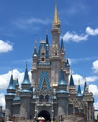

This park holds a special place in my heart. I have been able to travel here since I was a little girl. This place has many lifetime memories that I will cherish for a lifetime. Magical Disney moments have been made here, and I wouldn't want it any other way! Below I talk about the four parks and I give a few facts about each. Enjoy!

This castle is 189 feet tall!
Inside the castle, there is a suite that only a select few get the pleasure of seeing!
Park guests could eat breakfast, lunch, and dinner inside the castle at Cinderella's Royal Table!
This park has been in the news recently because it just opened a new land this summer. Toy Story Land opened in June and has been drawing in guests from around the world. Guests are shrunk down to the size of a toy and get to experience Andy's backyard. Slinky Dog Dash debuted when the land opened, and guest are willing to wait hours to ride this coaster. I got to experience it this summer, and it was definitely worth the wait! Star Wars Land will also be coming to this park later next year! Hollywood Studios has many different experiences that allow families to make lifetime memories.
Before Hollywood Studios, this park used to be called MGM.
This park was once a working production set.
The iconic sorcerer hat was taken down a few years ago.
Epcot stands for Experimental Prototype Community of Tomorrow. This park was an idea that Walt Disney had created. It was his idea of a perfect society that was efficient and safe for all. Today, Epcot attracts guests for across the globe. Within the park, there are two distinct lands. There is Future World and the World Showcase. Future World is theme around space travel, flying, and innovation. Popular rides include Test Track, Spaceship Earth, and Soarin: Around the World. The World Showcase is a land where guests can experience cultures from around the world! France, Germany, Canada, and Morocco are only a few places that guests can explore. There is no other place in the world like it! Traveling was just made easier!
There is a ride inside the Epcot globe called Spaceship Earth.
This park has 13 pavilions that guests can enjoy!
Epcot holds multiple festivals throughout the year.
Ever wanted to experience a zoo and a theme park at the same time, Animal Kingdom is the place to be! Guests can enjoy multiple lands that attract guests of all ages. A new land that opened a few years ago is Pandora: The World of Avatar. This summer, I got to see Pandora in person and it was breath-taking. My sister, Ally, and I got to ride Flight of Passage for the first time. We had a blast and would ride it again when we go back! Guests are willing to wait hours to get this one-of-a-kind experience. Other popular attractions here are Expedition Everest: Legend of the Forbidden Mountain, Dinosaur, and Kali River Rapids. Expedition Everest takes passengers through the Himalayan Mountains on a Tea Train. On this train, passengers need to get to the base of Mount Everest but in order to do so they have to travel through the "forbidden mountain." This ride is thrilling for all that ride and there may just be a unique surprise during your journey. If you ever go to Disney's Animal Kingdom you are sure to have a wild day!
Animal Kingdom has a safari that guests can enjoy!
This park is now open at night.
Expedition Everest is a popular thrill ride at this park!